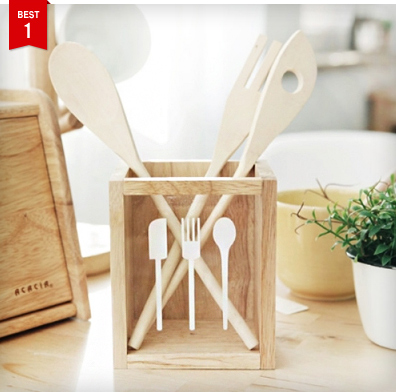

-

내추럴 수저꽂이
내추럴 수저꽃이 입니다. 군더더기 없는 깔끔한 박스 디자인에 앞면 아크릴에 귀여운 수저 그림이 그려져 있어요. 원목나무의 내추럴함을 느낄 수 있는 수저꽃이 입니다.
-

우드 사각 컵받침
내추럴 수저꽃이 입니다. 군더더기 없는 깔끔한 박스 디자인에 앞면 아크릴에 귀여운 수저 그림이 그려져 있어요. 원목나무의 내추럴함을 느낄 수 있는 수저꽃이 입니다.
-
정글 삼나무 서류 보관함
내추럴 수저꽃이 입니다. 군더더기 없는 깔끔한 박스 디자인에 앞면 아크릴에 귀여운 수저 그림이 그려져 있어요. 원목나무의 내추럴함을 느낄 수 있는 수저꽃이 입니다.
다이정글은 업계 선두주자로 오랜 실무 경험과 축적된 전문지식을 자랑하는 DIY 가구 전문 쇼핑몰입니다.
DIY와 리폼에 대해 생소한 소비자에게 리폼을 알리고 장려하며 초보자도 쉽게 도전할 수 있도록 다양한 콘텐츠와 소비자 중심의 쇼핑몰로 거듭나기 위해 노력하고 있습니다. 즐거운 DIY와 리폼, 다이정글과 함께 시작하세요!